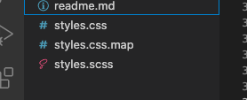
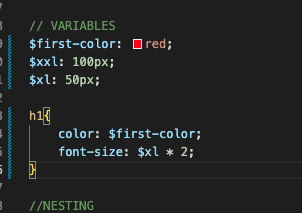
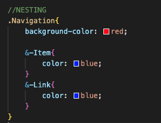
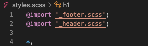

SASS
Desventajas de CSS Plano
Dificultad para el mantenimiento
Escasa modularidad
Mayor riesgo de conflicto
Dificultad para el rendimiento
Menor legibilidad y mantenibilidad del código
Dificultad para la escalabilidad
¿Que es un pre procesador?
Es una herramienta que extiende la funcionalidad básica del CSS al permitir el uso de características como variables,
anidamiento, mixins (fragmentos reutilizables de código), funciones, entre otras.
¿Que es SASS?
Es un preprocesador de CSS que amplía la funcionalidad básica del CSS al agregar características como variables,
anidamiento, mixins (fragmentos reutilizables de código), funciones, entre otras.
SASS(Compilacion, variables, anidamiento, nesting , modularidad)
- Compilación: Sass no es interpretado directamente por los navegadores web. En su lugar, el código Sass se compila en CSS estándar que los navegadores pueden entender.

- Variables: Permite definir variables para almacenar valores que se utilizan repetidamente en el código CSS, lo que facilita la actualización y el mantenimiento del estilo.

- Anidamiento: Permite anidar selectores CSS dentro de otros selectores, lo que ayuda a organizar y visualizar la estructura del código de manera más clara y concisa.

- Modularidad: Sass fomenta la modularidad al permitir la división del código CSS en archivos separados y su posterior importación en un archivo principal.

CREAR EL README.MD